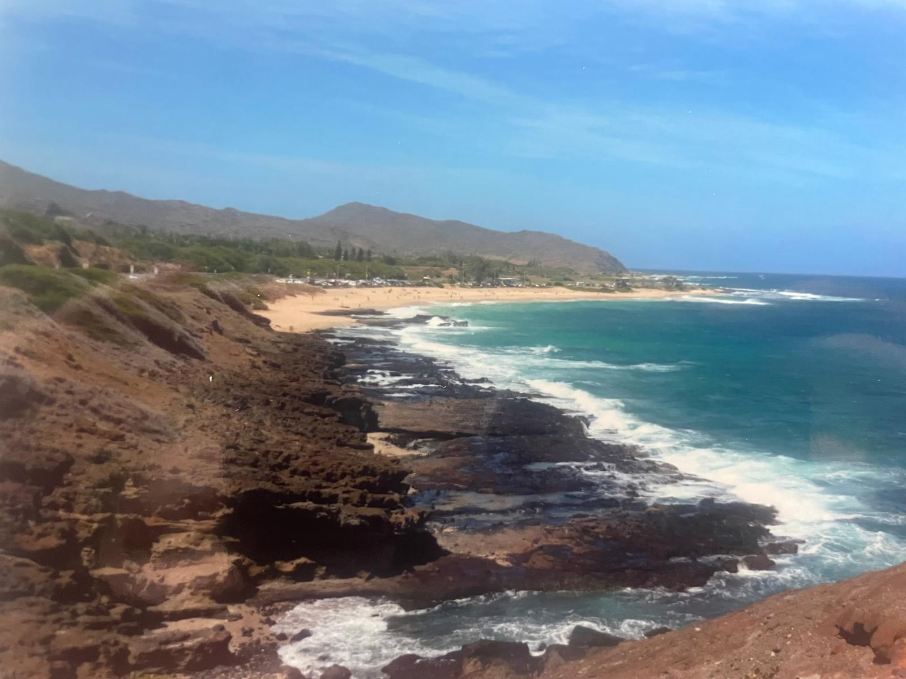
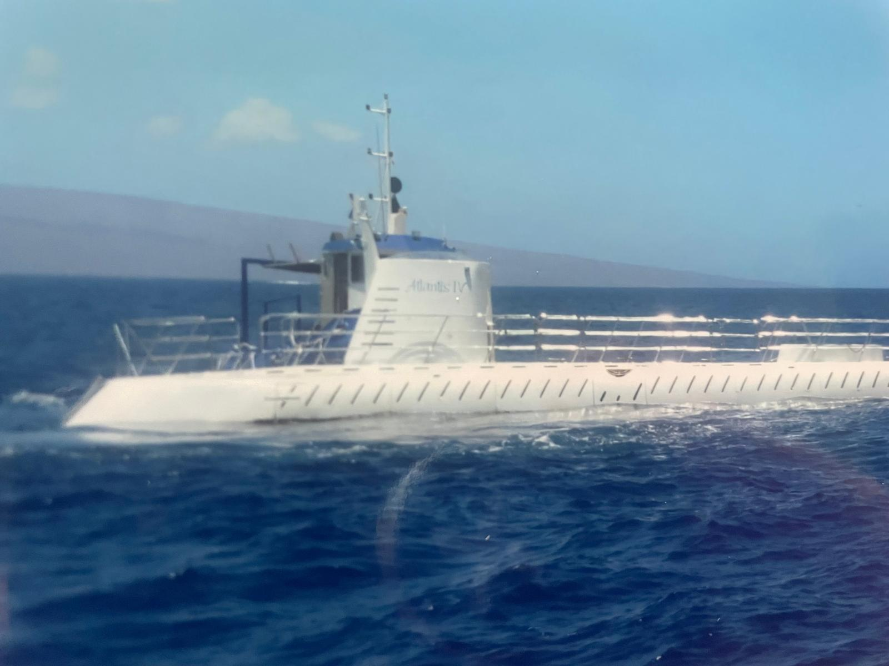
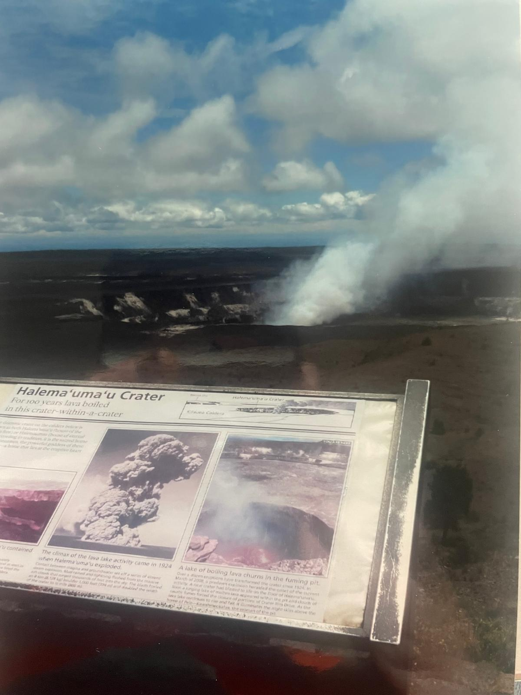
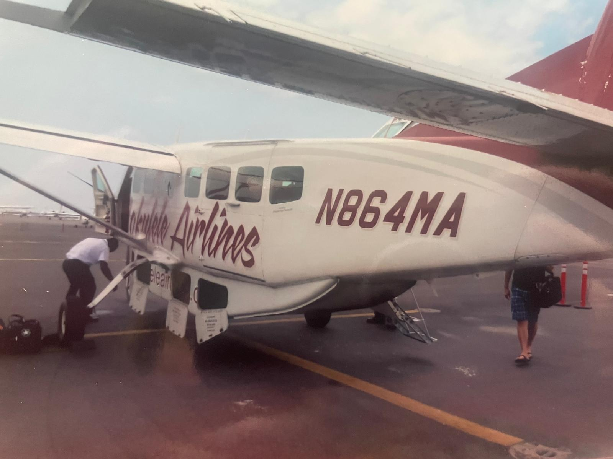
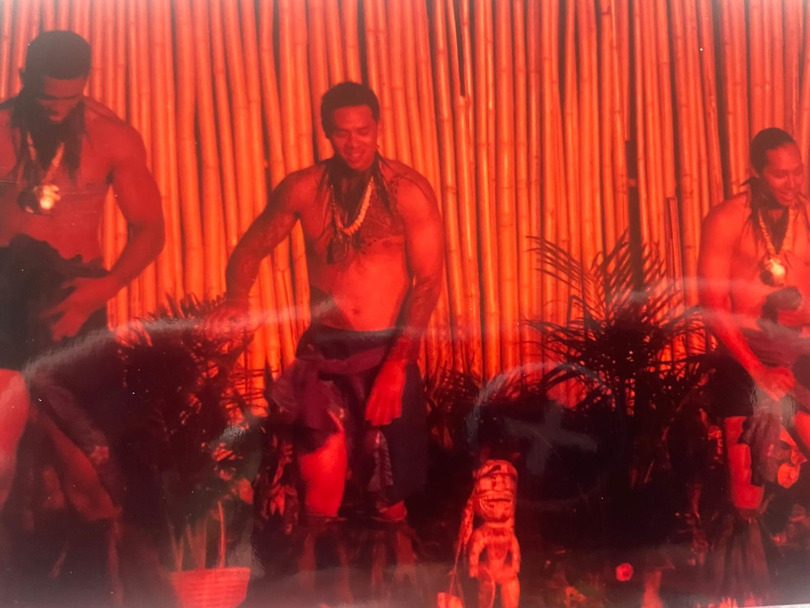
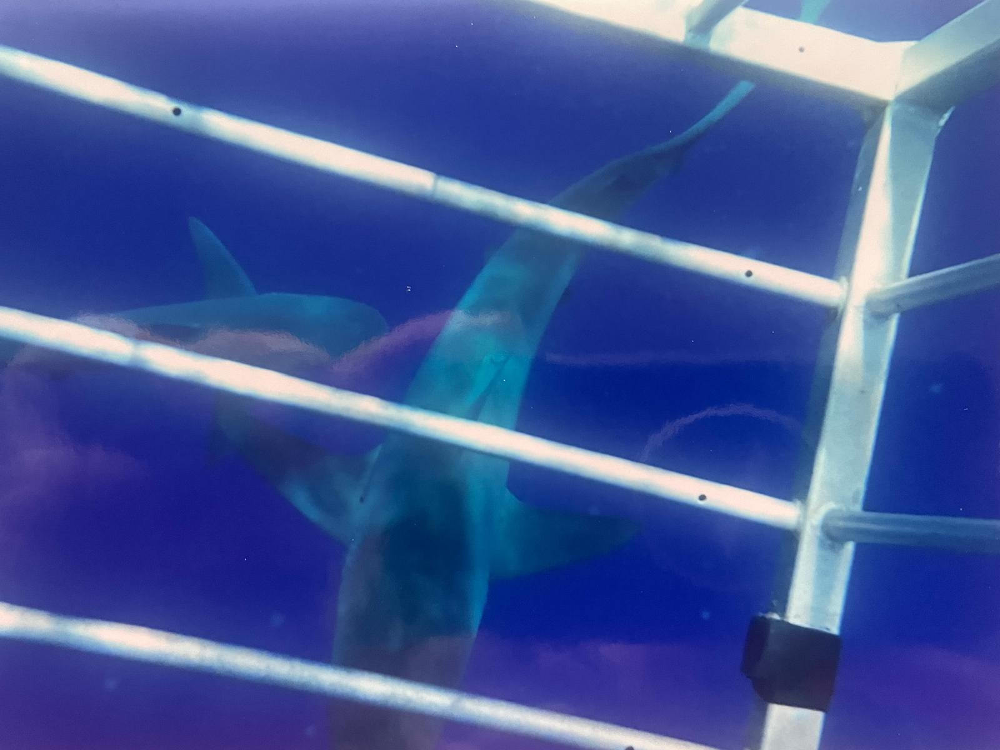
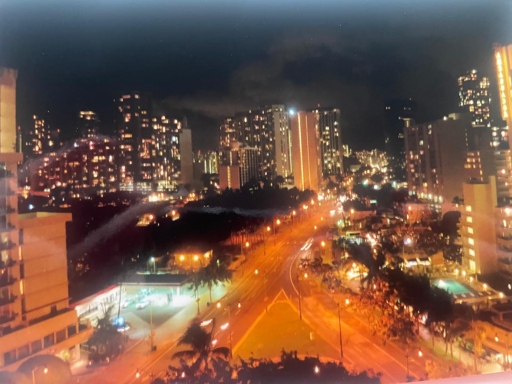
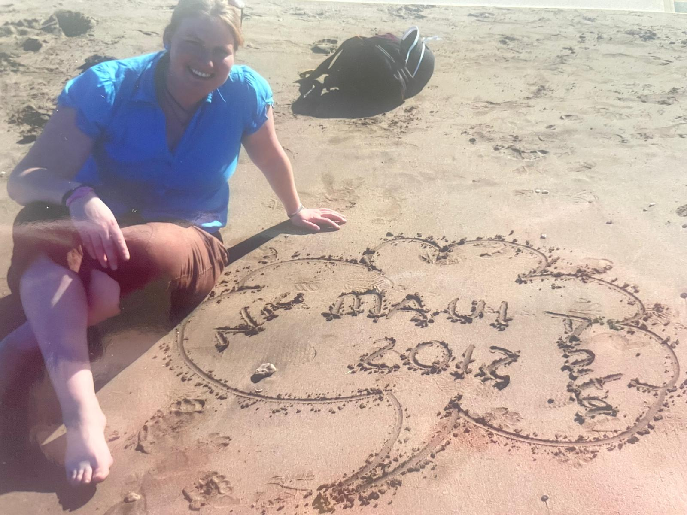

We stopped off in Hawaii on our way back from Australia — and what a stopover it turned out to be. A week island-hopping between Big Island, Oahu, Maui and Kauai, and every single island felt like a completely different country. Volcanoes, shark cage diving, the Road to Hana, luaus, manta ray night snorkels and helicopter flights over some of the most dramatic coastline on earth. Hawaii absolutely delivered.








We landed in Hawaii on our way home from Australia, and from the moment we touched down on Big Island we knew this was going to be something special. There's nowhere else on earth quite like Hawaii — it manages to combine extraordinary natural wonders, incredible adventure, rich culture and some of the most beautiful scenery in the world, all within a handful of islands you can hop between on short flights.
We spent time on all four main islands in a week — Big Island, Oahu, Maui and Kauai — and the contrast between them was extraordinary. One day you're standing on the rim of an active volcano. The next you're in a cage with sharks off the North Shore. The day after that you're driving through rainforest on the Road to Hana. And then you're in a helicopter watching waterfalls tumble into the Pacific over the Nā Pali Coast. Hawaii is genuinely extraordinary and it deserves every word of its reputation.
Big Island is unlike anywhere else on earth. We landed here first and the scale of the place is immediately striking — this is the largest island in the Hawaiian chain and it contains just about every climate zone on the planet. Active volcanoes, black sand beaches, lush waterfalls and some of the best stargazing in the world.
The centrepiece of any Big Island visit is Hawaii Volcanoes National Park — watching lava glow and witnessing the raw power of the earth creating new land is something you'll never forget. The black sand beaches are extraordinary — formed by lava cooling in the ocean, they're like nothing you've seen on any other beach holiday. We spotted sea turtles hauled up on the black sand, completely unbothered by the world around them.
The manta ray night snorkel was one of the most surreal experiences of the trip — enormous mantas gliding silently beneath you in pitch darkness, lit only by underwater torches. A Kona coffee farm tour gave a brilliant insight into how the world-famous coffee is grown and processed, and Akaka Falls — a stunning 135-metre plunge waterfall — is well worth the short walk through bamboo forest to reach it. On a clear night, stargazing from the summit of Mauna Kea — above the clouds at nearly 14,000 feet — is one of the greatest experiences we've ever had.
We flew from Big Island to Oahu on a small inter-island plane — one of those brilliant short hops that makes island hopping feel like such an adventure. Oahu is where Waikiki is, and the buzz of the beach strip with its bars, restaurants and nightlife is brilliant — but the real highlights of Oahu for us were outside the city.
The shark cage dive on the North Shore was the single most adrenaline-filled thing we did on the entire trip. You are lowered into the Pacific in a cage and Galapagos and sandbar sharks circle around you at close range. It sounds absolutely terrifying — because it is — but in the best possible way. Completely unforgettable and something we'd recommend to anyone who has even a passing sense of adventure.
Pearl Harbor is deeply moving — standing at the USS Arizona Memorial above the sunken battleship and reflecting on what happened there is one of those travel experiences that stays with you long after you come home. The Dole Plantation, Diamond Head viewpoint, snorkelling at Hanauma Bay, watching the surfers at Pipeline and Sunset Beach and the evening Hawaiian luau with traditional music and dance rounded out one of the most packed and brilliant days we had anywhere in Hawaii.
Maui is where Hawaii starts to feel truly tropical. Lush, green, dramatic and beautiful in every direction. The island is anchored by the enormous dormant volcano Haleakalā — watching the sunrise or sunset from the summit crater is one of those bucket-list moments that completely delivers. The light, the silence and the sense of being above the clouds is extraordinary.
The Road to Hana is one of the great scenic drives in the world — a winding coastal road that takes you through waterfalls, rainforest, black sand beaches and some of the most dramatic scenery you'll see anywhere. The banana bread stands on the roadside are a Maui institution and very much worth stopping for. Allow a full day and take your time — there is no rushing the Road to Hana.
Maui is also brilliant for snorkelling, whale watching (depending on season — we were lucky), and the resort beach areas around Kaanapali and Wailea are beautiful. The historic town of Lahaina is a wonderful place to wander, eat and soak in the old whaling-village atmosphere. A helicopter tour over Maui's interior reveals waterfalls and valleys you could never reach on foot.
Kauai is the oldest and arguably the most beautiful of the Hawaiian islands — and that is saying something. The landscape is dramatic, lush and almost impossibly green. The island is often called the Garden Isle and it earns that name completely. It also happens to be the location of a rather well-known film franchise — you'll recognise the valleys and sea cliffs immediately.
The helicopter flight over the Nā Pali Coast was simply one of the greatest things we have ever done. The sea cliffs rise thousands of feet out of the Pacific, waterfalls plunge into the ocean below and the sheer scale of the landscape from the air is jaw-dropping. If you do one thing on Kauai — do this. It is worth every penny. The Nā Pali Coast from the ground, on a boat trip along its base, is equally extraordinary — looking up at those cliffs from the water is a completely different but equally powerful perspective.
Waimea Canyon — often called the Grand Canyon of the Pacific — is an extraordinary sight. The colours, the depth and the scale of it are genuinely stunning. Hanalei Bay is one of the most beautiful beaches we have ever seen anywhere in the world — a perfect crescent of golden sand backed by green mountains.
The single most adrenaline-charged thing we have ever done. Galapagos and sandbar sharks circling around you in the Pacific off the North Shore. Terrifying, exhilarating and completely unforgettable.
Standing on the rim of an active volcano and watching lava glow is one of those experiences that puts everything in perspective. The earth creating new land in front of you — there is nothing quite like it.
Enormous manta rays gliding silently beneath you in pitch-black ocean, lit by underwater torches. Surreal, peaceful and magnificent in equal measure. One of the most unique wildlife encounters we've ever had.
One of the great scenic drives in the world. Waterfalls, rainforest, black sand beaches and banana bread on the roadside. Allow the full day — you won't want it to end.
Sea cliffs thousands of feet high, waterfalls tumbling into the Pacific, valleys straight out of Jurassic Park. From the air, Kauai is jaw-dropping. This was worth every single penny.
Standing at the USS Arizona Memorial above the sunken battleship is deeply moving. One of those travel experiences that stays with you long after you've come home.
At nearly 14,000 feet, above the clouds on the summit of Mauna Kea, the night sky is extraordinary. The Milky Way in full view and the most spectacular stars we have ever seen anywhere.
Traditional Hawaiian food, hula dancing, fire and music under the stars. The luau is a brilliant cultural experience and a brilliant night out — absolutely not to be missed.
Island hopping Hawaii is one of those trips that genuinely benefits from having the logistics taken care of — inter-island flights, accommodation across multiple islands and activities all arranged in advance. TourRadar has brilliant Hawaii itineraries that cover the islands properly.
Disclosure: This is an affiliate link. If you book through it we may earn a small commission at no extra cost to you.
From shark cage diving and Pearl Harbor tours on Oahu to helicopter flights over Kauai and manta ray snorkels on Big Island — book your Hawaii experiences in advance, especially the popular ones.
Disclosure: If you book through this link we may earn a small commission at no extra cost to you.
Klook is brilliant for booking individual activities across all four Hawaiian islands — great for shark cage diving, luau shows, snorkelling trips and inter-island day experiences.
Disclosure: This is an affiliate link. If you book through it we may earn a small commission at no extra cost to you.
Common questions
What to pack for Hawaii
From volcano hikes to beach days and ocean adventures — Hawaii means heat, outdoor activity and a lot of time in or near water. These are the things we'd pack without hesitation.
Avoid roaming charges and stay connected across all four islands for maps, bookings and navigation.
View on Amazon →Essential — the Hawaiian sun is intense, especially on the water and at altitude on Mauna Kea and Haleakalā.
View on Amazon →Volcano hikes, waterfall walks and the Road to Hana all demand proper footwear. Don't rely on flip flops alone.
View on Amazon →Long days out across multiple islands — your phone battery won't survive without a backup. Essential for maps and photos.
View on Amazon →The USA uses different plugs to Ireland — a universal adaptor covers all your devices across the islands.
View on Amazon →Essential for rainforest walks, the Road to Hana and any waterfall stops. Kauai especially can have mosquitoes.
View on Amazon →Disclosure: These are Amazon affiliate links. If you buy through them we may earn a small commission at no extra cost to you.
Browse Hawaii tours on TourRadar, book your activities on GetYourGuide or Klook, and get out there. Hawaii is one of those trips that delivers beyond every expectation.
Affiliate disclosure: if you book through our links we may earn a small commission at no cost to you. We only recommend experiences we've done ourselves.